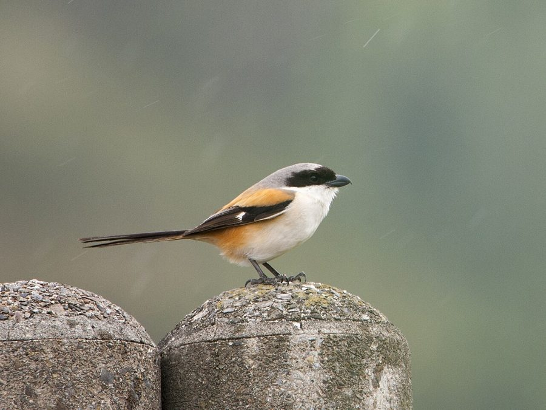

लटोराLong-tailed Shrike
Lanius schach · Laniidae · BRD-0037

- Scientific name
- Lanius schach Linnaeus, 1758
- Family
- Laniidae
- Hindi
- लटोरा
- Status here
- native
- IUCN
- LC
When to look कब देखें
Present all year.
लटोरा / Long-tailed Shrike
Lanius schach Linnaeus, 1758 — Laniidae
लटोरा (लॉन्ग-टेल्ड श्राइक) — पूर्वी उत्तर प्रदेश के खुले खेतों, सड़कों के किनारे, कँटीली बाड़ों और बिजली के तारों पर अकेला बैठा रहने वाला एक अत्यंत साहसी और आक्रामक निवासी शिकारी पक्षी है। इसे अक्सर "कसाई पक्षी" (butcherbird) भी कहा जाता है, क्योंकि यह अपने शिकार (टिड्डों, गिरगिटों, चूहों) को पकड़कर कँटीली झाड़ियों या नुकीले तारों में घुसाकर फँसा देता है (impales) ताकि उसे टुकड़ों में काटकर खा सके या बाद के लिए सुरक्षित रख सके (larder building)। इसकी मुख्य पहचान इसकी आँखों पर बना गहरा काला मुखौटा (black mask), स्लेटी रंग की पीठ (grey back), नारंगी-लाल (rufous) पार्श्व (flanks) और बहुत लंबी, सीढ़ीनुमा काली पूँछ है। इसकी चोंच भारी, मजबूत और आगे से बाज की तरह झुकी हुई (hooked bill) होती है जो शिकार का मांस फाड़ने के काम आती है।
Quick Identification त्वरित पहचान
| Feature | Description |
|---|---|
| Size | Medium-sized bird (23–27 cm total length); characterised by a very long, slender tail |
| Mask | Prominent, jet-black band (mask) running from the forehead, through the eyes, to the ear coverts |
| Colouration | Slate-grey upper back; warm orange-rufous lower back and sides (flanks); white breast |
| Tail | Very long, narrow, and black; narrow pale margins on outer tail feathers |
| Bill | Heavy, black, strongly hooked at the tip with a small tooth-like notch |
| Behaviour | Perches prominently on high, exposed wires or thorny branches, scanning the ground |
Field tip: Look on roadside telephone wires. Watch for a bird with a distinct black eye mask, rufous sides, and a very long black tail that it constantly wags or swings. If you check nearby thorny bushes, you may find grasshoppers or small lizards impaled on thorns—its signature larder.
Morphology आकारिकी
Biometrics (typical measurements in the northern Indian plains):
| Measurement | Range |
|---|---|
| Total length | 230–270 mm |
| Wing (flattened chord) | 90–100 mm |
| Tail | 110–135 mm |
| Tarsus | 28–32 mm |
| Bill (culmen from base) | 18–22 mm |
| Weight | 40–55 g |
Plumage: The crown, nape, and upper mantle are slate-grey, fading into warm rufous-orange on the lower back, rump, and upper tail coverts. The underparts are white, with a rich rufous wash on the flanks and belly. The wings are black with a small white patch at the base of the primaries, showing as a white wing bar in flight. The long, graduated tail is jet-black, with the outer feathers tipped with rufous-brown.
Bare parts: The stout, laterally compressed bill is black, with a sharp hook at the tip. The irises are dark brown. The strong legs and feet are black.
Vocalisations
Long-tailed Shrikes are vocal, producing harsh notes and possessing mimicry skills.
- Advertising / Call: A harsh, grating, double-syllabic screech: schach-schach or gerlek-gerlek, uttered repeatedly from its high perch.
- Mimicry: During the breeding season, males sing a quiet, sweet song incorporating calls of other local birds like mynas, lapwings, and even dogs barking.
Ecological Role पारिस्थितिक भूमिका
Visual ambush predator and larder builder.
- Sentinel predator: They occupy high visual perches, diving down to capture large insects and vertebrates, acting as an important ecological controller of field pests.
- Prey impaling: They impale prey on thorns (such as Babool Acacia nilotica or Lantana Lantana camara) or barbed wire. This helps them tear meat apart (as they lack raptor-like talons) and caches food for times of bad weather.
- Indicator of open grasslands: Their presence indicates healthy insect and small vertebrate populations in dry farmland edges.
Life Cycle / Phenology जीवन चक्र
- Breeding season: March to July, before the monsoon begins.
- Nesting: They build a large, deep, cup-shaped nest of thorny twigs, dry roots, rags, and grass.
- Nest site: Placed securely inside dense thorny trees like Babool or Jujube (Ziziphus mauritiana) to deter climbing predators.
- Clutch size: 3 to 6 pale greenish-white eggs blotched with purple-brown.
- Incubation: 13–16 days, done primarily by the female, while the male guards and feeds her.
- Fledging: Both parents feed the young with soft caterpillars and small lizards. Chicks leave the nest in 14–18 days.
Host Plants or Prey आहार
Primary food items:
- Insects: Large grasshoppers (Oxya spp.), crickets, dung beetles, and caterpillars.
- Vertebrates: Oriental garden lizards (Calotes versicolor), house geckos, field mice, and small frogs (such as Fejervarya limnocharis).
- Other prey: Occasional small birds (like sparrow fledglings) and nestlings.
Predators / Natural Enemies शत्रु
- Raptors: Black Kites and Shikras hunt foraging shrikes.
- Corvids: House Crows (Corvus splendens) raid nests for eggs.
- Reptiles: Large arboreal snakes like Rat Snakes (Ptyas mucosa) climb thorny trees to feed on chicks.
Agricultural / Human Relevance कृषि प्रासंगिकता
Natural pest controller. Shrikes are highly beneficial to crop security in Basti because they consume huge numbers of large grasshoppers, beetles, and rodents.
However, they are aggressive and will actively mob farmers or dogs who walk too close to their nesting trees. In local culture, they are known as "कसाई चिड़िया" (butcher bird) because of their impaling habit, which is sometimes misunderstood as cruel, although it is a vital survival adaptation.
Expected Locally स्थानीय रूप से अपेक्षित
Not a field record. Written from published accounts for eastern Uttar Pradesh. No confirmed local sighting yet — if you have seen it, that is what the atlas needs.
अभी तक स्थानीय पुष्टि नहीं। यह विवरण प्रकाशित स्रोतों से है, किसी अवलोकन से नहीं।
A very common and highly territorial resident along the highways and crop edges of Basti. They are seen perching on telegraph wires, swaying their tails, and diving to catch prey on road margins. They frequently build their nests in the thorny branches of Babool (Acacia nilotica) or Ber (Ziziphus mauritiana) trees on the borders of sugarcane fields.
Distribution वितरण
Global range: Widespread across Southern Asia, from Iran and the Indian Subcontinent to China, Indonesia, and the Philippines.
In India: Found throughout the plains and hills up to 3,000 meters.
In Uttar Pradesh: Abundant resident state-wide in open country and farming districts.
In Basti district / eastern UP: Found in high numbers on all farmland borders and roadside wire lines.
Research Questions शोध प्रश्न
Anyone can investigate these | कोई भी इन प्रश्नों की जाँच कर सकता है
- Which thorny plant species (Babool vs. Ber vs. Lantana) is most preferred by Basti Shrikes for impaling prey? — Locate larders and record the plant species.
- What is the average height of a Shrike's nesting fork in rural Babool trees? — Measure and record active nest heights.
- How many minutes does a Shrike spend on a wire perch before diving for prey? — Time hunting perches and calculate capture success rates.
- Do Shrikes actively mimic predator calls (like Shikra) to clear other small birds from foraging areas? / क्या लटोरा शिकारी पक्षियों (जैसे शिकरा) की आवाज़ की नकल करता है ताकि दूसरे छोटे पक्षियों को भगा सके? — Record mimicry behavior.
- Does the proximity of roads affect the density of Shrike territories due to insect deaths on asphalt? / क्या सड़कों की निकटता सड़क किनारे मरने वाले कीड़ों के कारण लटोरा के क्षेत्रों के घनत्व को प्रभावित करती है? — Count territories near vs. far from highways.
Similar Species मिलती-जुलती प्रजातियाँ
| Species | Key Difference | हिंदी |
|---|---|---|
| Bay-backed Shrike (Lanius vittatus) | Smaller (18 cm); pale grey head; dark maroon-chestnut back; white wing patch is much larger; black tail | भूरा लटोरा — छोटा आकार, गहरा महरून रंग की पीठ |
| Grey Shrike (Lanius excubitor) | Larger (24 cm); entirely grey, black, and white (no rufous/orange on body); black tail; rare winter visitor | बड़ा लटोरा — शरीर पर कोई नारंगी रंग नहीं, दुर्लभ |
| [BRD-0027 House Crow] (Corvus splendens) | Much larger; slate neck; lacks black eye mask and rufous flanks; different beak shape | कौआ — बहुत बड़ा आकार, चेहरे पर मुखौटा नहीं |
Field rule: Black eye mask, grey upper back, bright orange-rufous flanks, a long black tail, and a heavy hooked bill identify the Long-tailed Shrike.
Taxonomy & Classification वर्गीकरण
Original description. Carl Linnaeus described the Long-tailed Shrike as Lanius schach in 1758 in his work Systema Naturae, 10th edition (Vol. 1, p. 94). The type locality was China. The genus name Lanius is the Latin word for butcher, referencing the prey-impaling habit. The specific name schach is an onomatopoeic representation of its harsh grating call.
Subspecies. Twelve subspecies are recognized. The resident subspecies in the northern plains of India is:
| Subspecies | Authority | Range | Notes |
|---|---|---|---|
| L. s. erythronotus | (Vigors, 1831) | Pakistan, Northern and Central India | UP subspecies; characterized by a moderately grey mantle and bright rufous lower back |
Family and order placement. Placed in the order Passeriformes, family Laniidae (shrikes).
Phylogenetic notes. Lanius schach forms a superspecies with Lanius tephronotus (Grey-backed Shrike), which replaces it at higher elevations in the Himalayas.
IUCN status rationale. Listed as Least Concern (LC). The species has a massive range and stable populations, adapting successfully to agricultural edges and fence lines.
Photo Gallery फोटो गैलरी
References संदर्भ
- Linnaeus, C. (1758). Systema Naturae per regna tria naturae. Editio Decima. Laurentii Salvii, Holmiae, p. 94. [original description]
- Ali, S. & Ripley, S. D. (1999). Handbook of the Birds of India and Pakistan. Vol. 7. Oxford University Press, New Delhi.
- Grimmett, R., Inskipp, C. & Inskipp, T. (2011). Birds of the Indian Subcontinent. 2nd ed. Christopher Helm, London.
- Yosef, R. (1996). Family Laniidae (Shrikes). In del Hoyo, J., Elliott, A. & Sargatal, J. (eds). Handbook of the Birds of the World. Vol. 13. Lynx Edicions, Barcelona.
- BirdLife International (2024). Lanius schach. IUCN Red List of Threatened Species. Ver. 2024.
- GBIF Occurrence Data — Lanius schach, Uttar Pradesh (2010–2025).
Source file: species/fauna/birds/long_tailed_shrike.md